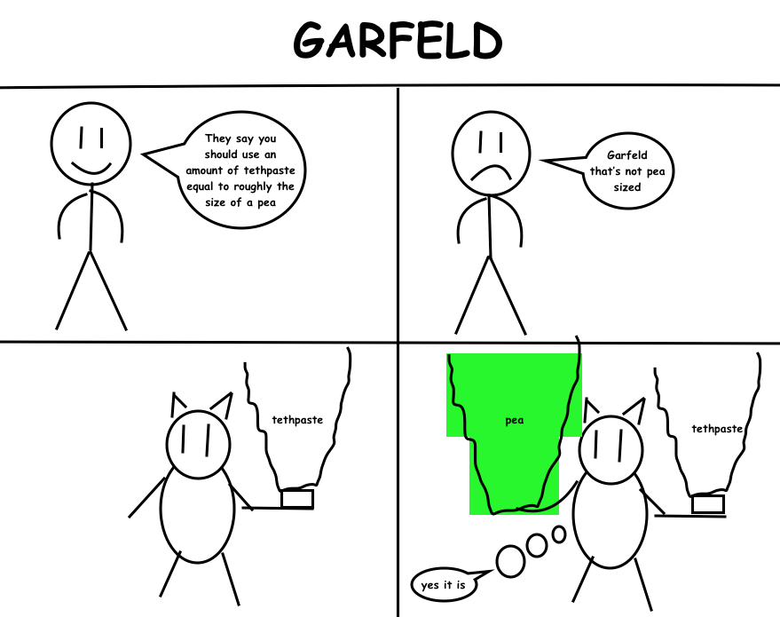
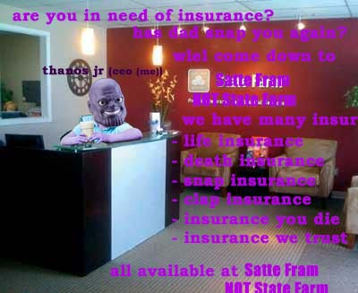
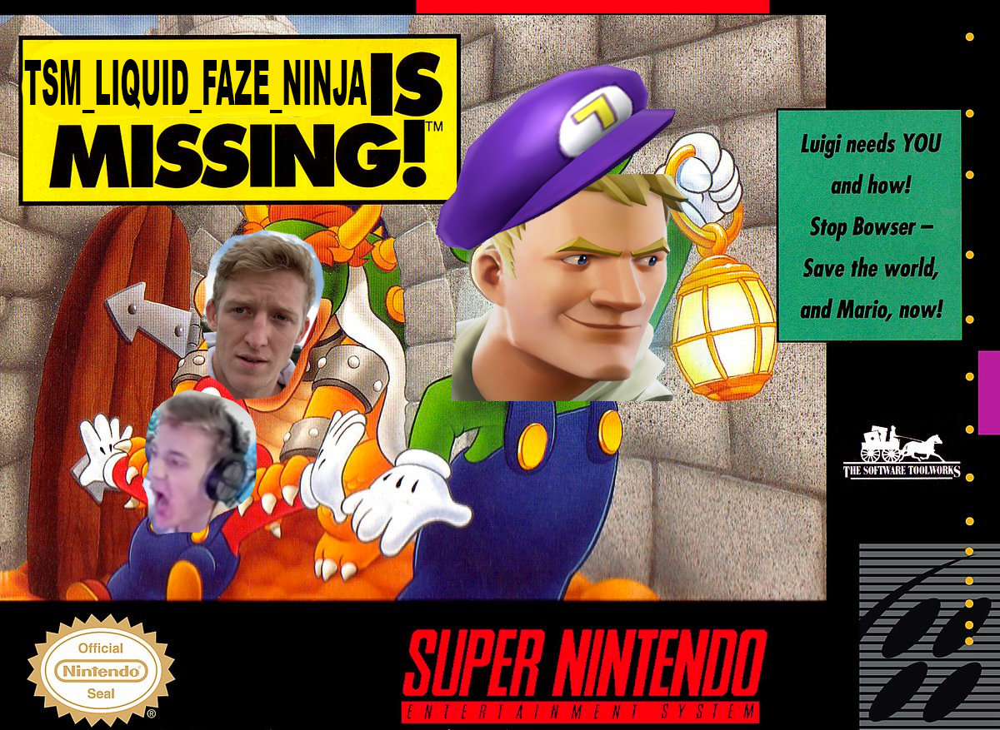
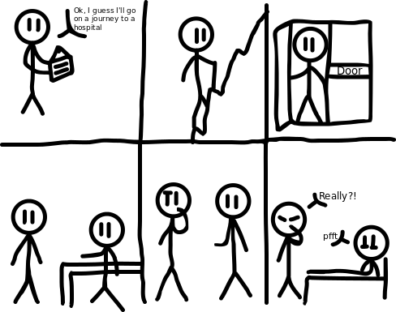

Episode 22: May 25th, 2019
Back to index

"Being a bit slow, hmm?"
ANNOUNMENT:
by Shef Kerbi
Our management over at Shef Werld were getting worried that SKNN was becoming irrelevant (which seems to be happening), so to help spice things up, we've redone the website after winning the SKNN vs Github case. The site is now directly under the control of Shef Kerbi rather than Apple. We're also planning some fun corporate events to increase RP between news releases, and we've also increased the staff's pay by 15%.
Also, MISITOUS BIRB DINERBLADE has now left Dreem Lend with all of it's kids. We congratulate it in it's achievement, but we're glad now that it isn't generating hurricane force winds.
--
BRAKING NOOS
by Bon Starbuckle (edited by Shef Kerbi)
Bon Starbuckle Sues Fellow Cartoonist Reali For A Bajillion Shef Kerbi Dollars Over 'Garfeld' Character
"this garfeld is clearly based off of my original character gornfeld". "i say copyright infringement"
actually it's based off garfild not gornfeld plus it's parody which is fair use so H A
(nope its obviously based off of gornfeld)

The case does not currently seem to have a conclusion. Here's the evidence if you would like to formulate your own opionion:

BROKEN NESW
by Reali
Recently, a new language trend has appeared, where all people say is 'woomy'. We will now show you an interview.
Person: woomy
Reali: I'll take that as a yes. What is your opinion on the trend?
Person: woomy
Reali: ...is that all you're going to say?
Person: woomy
Reali: I think I need to get going.
Person: veemo
Reali: Huh?
Person: woomy
Reali: ... *leaves*

BREAKING NEWS
by CrazeePi's Disembodied Voice
Due to not being hired after doing the terrible deed of not filling in the box, CrazeePi's Disembodied Voice will now be writing who his articles/comics/ads/whatever are from.

Now I don't wanna give my own opionion but...
OPIONION WITH SHEF KERBI AND BON STARBUCKLE
This newspaper is still relevant I think
So we told you Shef Kerbi News Network fans on our Scratch page that you could post anything with the #SKNN hashtag and you could end up in our paper! In this episode, we'll respond to some of your feedback with the new SKNN format, as well as show some of your cool stuff!
We began this issue's section with
"buy season 3 battle pass thanks"
and here were your responses:
w04kat4am wrote:
"Hi i'm playing uno and someone just whipped out a dos card what should I do?"
Shout tres at them and then pull out your +4 card, your # card and some Yu-gi-oh card that you left in your pocket and then flip the table and run out of the window
johngamemanfanclub wrote:
"where is john gameman i love him"
Drive to Cappy Town, Dreem Lend and then drive around all the streets until you find a giant, untextured cube and a sign near it that says john gameman profesonal game and man man's porfessonal game house and man house man where john gameman games and mans"
Unfortunately, we interrupt the OPIONION column with a very breaking news that was sent in through the telegram:

This is very sad can we get 10 starred post on the SKNN discord?
Bon And Bon’s Cat Give A Helpful Tip
Here's a step by step guide to doing the epic new frotnite nown as the Flose:
1. dont
----------------
COMIX
Ghost Every-Clean Part 2 by Keysun DDDO

by reali

The Adventure was a loss.
SPORT????????????
JOHN BREAKING SPORTS GAMEMAN
cool people team "sdreem kland nsoccer nteam" play against eveil bad guy team "evil bad gueys." evil bad guys cheat and start wining but rul makers say ok not fair to john gameman porfesional game and man man. john gameman decied to stop eviel bad guys from cheting and fly down from up to stop them. rule makers say to john gameman profesonal game and man man "john game man pro fesonal game and man man you can not fly that brek rules of realite." THEY ARE VERY RUDE. john gameman say back "no i john gameman i em expert countr streke player you cannot stop me" and john gameman beat up rule makers. john manman take all and throw it and gol bost 1000 times!!!! cool people team sdreem kland nsoccer nteam win by 999999999999999999 points! they celery john gameman becaze he supor coollike!!!!!!! yay john gameman, profesonal game and man amn!!!!!!!!!!
EDIT: No evidence of John Gameman flying down during the mentioned game has been found. In addition, the Sdreem Kland Nsoccer Nteam lost the game against the Evil Bad Guys.
WETHR
who broke the thermometer
THANK YOU FOR WATCH. PLEASE TUN E IN NEXT TIME FOR MORE NESW

Shef Kerbi News Network follows the guidelines and conventions set by the 1984 High Quality News Act of Dreem Lend, which states
that any news published is to be of a high quality, is to remain unbiased and to show all sides of a news report, does not attack anyone, and protects the privacy
of people whose identities don't want to be revealed.
If you would like to file a complaint regarding content use, please message SKNN through our Scratch account. We also have a Twitter and Instagram account if you
prefer.
Shef Kerbi News Network respects the ancestors of Cappy Town, and understands that they are the reason why Dreem Lend exists.
Shef Kerbi News Network is proud to be a subsidiary of Shef Werld
this website is best viewed with Ned's Escape